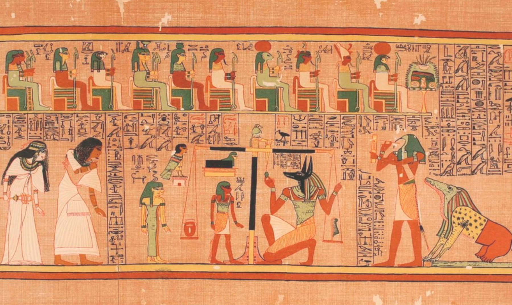

Los Egipcios inventaron y usaron muchas máquinas simples, como el plano inclinado y la palanca, para ayudarse en las construcciones.
El papel egipcio, hecho de papiro y la alfarería fueron exportados por la cuenca Mediterráneo.Sin embargo la rueda no aparecería hasta que invasores extranjeros trajeron con ellos carros.
También desempeñaron un importante papel en el desarrollo de la navegación marítima o tecnología marítima, mediterránea, tanto en barcos como faros.
El arado tirado por animales: Aun antes de la época faraónica, los campesinos del valle del Nilo ya usaban un arado de madera endurecida por el fuego para labrar la tierra.Añaden una segunda innovación importante; el arado primitivo iba tirado por bueyes.
Está sencilla herramienta se componía de un hilo y de un peso atados en lo alto de un pedazo de madera.Era de gran utilidad en la construcción para saber si una pared era horizontal.

La sierra de metal:De cobre o de bronce, se usaba para cortar madera y piedras calcáreas blandas.
Habrá que esperar hasta el año 1500 a. C. para que aparezcan las hojas de hierro, más resistentes.
El taladro de arco: Creada por los egipcios para hacer agujeros en la madera o en la piedra blanda para poder así insertar un clavo, para poder que el clavo no se viera en la madera o en la piedra blanda.
Bien fuera para maquillarse o ajustarse la peluca, las mujeres egipcias ya se miraban en los espejos.
Eran de cobre pulido.
Al ser muy costosos, estaban reservados a los príncipes y a los nobles.
Su invención se atribuye a los egipcios, que lo obtenían la pasta de vidrio a partir de una mezcla de arena, sosa y cal, a la que añadían óxidos metálicos para darle color.
Luego se calentaba un poco para que se volviera transparente.
Los artesanos moldeaban el resultado como si fuera arcilla para crear jarrones, ollas y amuletos.

Aparece en todas las representaciones del peso del corazón del difunto.
Para pesar, se solían utilizar pesas de piedra o de metal y con ellas podian pesar el oro para ir al otro lado de las almas perdonadas.

Las embarcaciones ya se conocían mucho antes de los egipcios, pero parece que fue en Egipto donde se construyeron por primera vez barcos de madera con velas.
Para construir barcos sólidos, los carpinteros aprendieron a cortar tablas y a ensamblarlas, y así fabricar cascos para navíos.
La nave funeraria de Keops, que data del Imperio Antiguo, cuenta con más de 1200 trozos y mide 42 metros de largo, por 5 metros de ancho.
Al ser hábiles tejedores, los egipcios crean también cuerdas sólidas y velas grandes que les permiten usar la fuerza del viento

Fueron los creadores de un sistema de escritura sumamente original. Para las tumbas y templos, escribían de derecha a izquierda, dibujando pequeños signos con las siluetas de los objetos a los que referían. Estos signos ejecutados con gran habilidad, eran denominándolos jeroglíficos.
Pero en los papiros se solía emplear otro sistema de escritura: la hierática, que no era otra cosa que los mismos jeroglíficos, pero de trazos más simplificados.
A partir de la 20ª dinastía, los signos se fueron simplificando aún más, formándose la escritura demótica o popular, así llamada por emplearse principalmente para los usos de la vida diaria.
De modo que estos sistemas no eran tres escrituras diferentes, sino los mismos jeroglíficos pero con trazos mas o menos simplificados.
La escritura egipcia fue uno de los grandes secretos de la historia, hasta que en el año 1.800 los arqueólogos franceses agregados a la expedición de Napoleón hacia Egipto, hallaron en las proximidades de Rosseta una piedra de granito con inscripciones escritura demótica y en griego.
Llevada la piedra a Francia y tras grandes esfuerzos, el arqueólogo Champollion logró descifrar la inscripción y establecer definitivamente la clave de los jeroglíficos. Con ello nació la egiptología, una nueva rama de la historia.

Los escribas egipcios inventaron un material de escritura a partir de la médula de una planta muy abundante en el Norte de Egipto llamada papiro.
Los tallos de las plantas de papiro, que alcanzan hasta 4 metros de altura, se cortaban en trozos de 40 cms y luego se deshacían en tiras.
La forma de iluminación más antigua era el fuego abierto de la fogata casera, sustituido más tarde por las antorchas, que producían mucho humo.
En Egipto fabricaban las antorchas con hojas de vid o fibras vegetales impregnadas de resina.

De acuerdo a las creencias religiosas de los Egipcios, para que una persona alcanzara vida despues de la muerte, era necesaria la conservación del cuerpo a través de la momificiación que consistía en la extracción de los organos internos y el embalsamamiento del cuerpo con sales y resinas especiales para luego envolverlo con paños y lino, sólo los egipcios más ricos, además del faraón y su familia, podían encargar su momificación, ya que era un proceso muy costoso, además de largo: la momificación tardaba 70 días en ser finalizada.